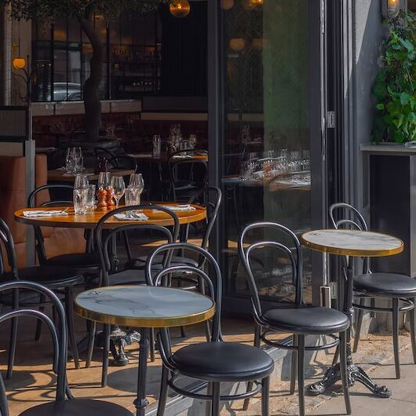
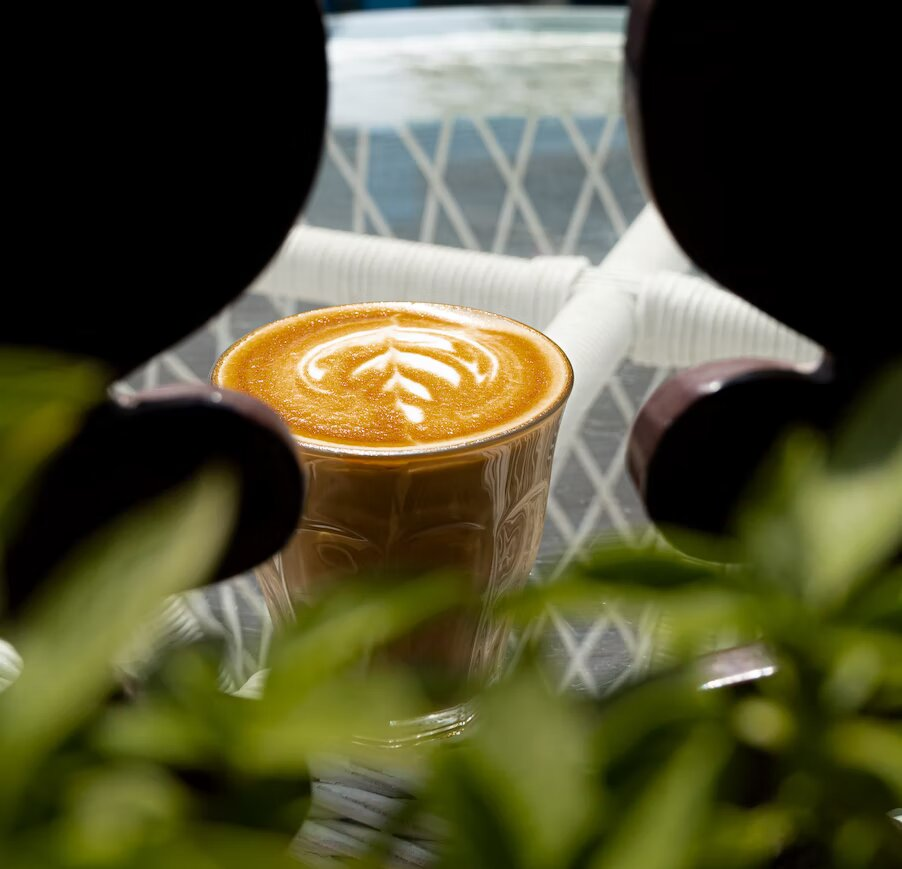
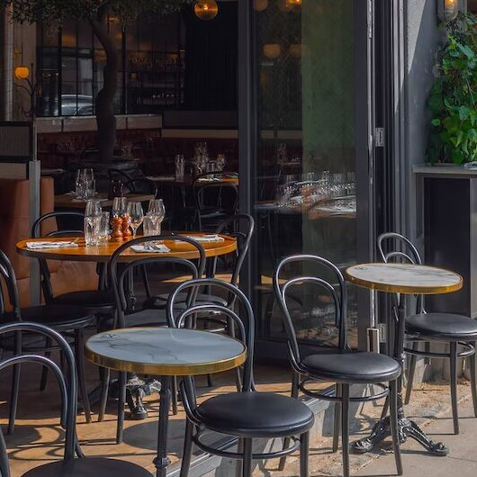
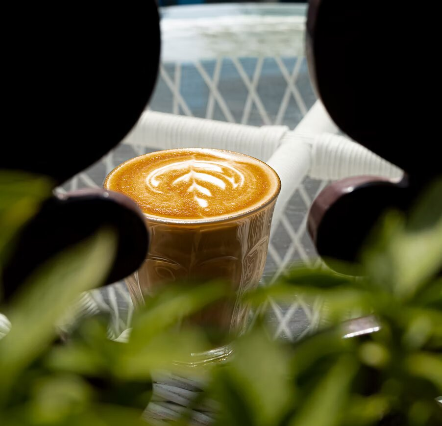

VELKOMMEN TIL OSS
OsloMet Kafé finner du i vårt sentrale, lyse og romslige lokale på storbyuniversitetet. Her kan du forsyne deg med alt fra varmmat, suppe, salat, og brød til å kun ta deg noe å drikke fra vår allsidige kaffemeny. Kaféen har en intim og hyggelig atmosfære og kan både fungere som et fint avbrekk fra den hektigste studiehverdagen eller et sted hvor du og gruppen din kan fokusere som aldri før, og kanskje også få en ekstra energiboost fra vårt gode utvalg.
Velkommen til OsloMet Kafé! Kom og besøk oss på Pilestredet 46!
Om Restauranten
På OsloMet Kafé møter du et varmt og behagelig lokalet, med en like varm og behagelig betjening. Vi ønsker å gi våre gjester et godt måltid,en god opplevelse og ikke minst ønsker vi å oppfylle våre gjesters behov. Enten om det er en rask kaffekopp du kjøper før du må løpe til forelesning, eller om det er et lengre opphold hvor du og vennene dine vil spise og snakke om alt og ingenting. Vi er her for deg uansett hva ditt behov i dag er! På vårt kjøkken blir maten behandlet med omtanke, vi vil servere god og ærlig mat. Velkommen til OsloMet Kafé!
Historien bak OsloMet Kafé
OsloMet Kafé var OsloMets aller første spisested, og har mer historie bak seg enn det mange ville tro. Kafén har eksistert i lang tid, langt lengre enn OsloMet og har dermed vært igjennom en rekke endringer og navn. Vi åpnet dørene for første gang i 1861, på Pilestredet 52, under Frydenlund Bryggeri Kafé. kun 2 år etter Frydenlund Bryggeri ble grunnlagt. Vår kafé var et sted fabrikkarbeiderne kunne spise og drikke i pausene sine. Det var et sted for sosiale relasjoenr og bånd, et sted arbeiderne kunne få et avbrekk fra arbeidet, og bli motivert til å fortsette dagen. I lang tid fungerte kafén vår kun for fabrikkarbeiderne, men i 1977 omgikk vi en del endringer, kafén ble åpnet for alle og enhver som trengte påfyll i hverdagen, vi endret lokalet til Pilestredet 46, og kafén endret navn til Frydenlund kafé. I 2011 tok HiOA over kafén da de begynte å bygge ut skolelokaler, og senere i 2018 endret kafén navn fra HiOA kafé, til det vi i dag kjenner godt, OsloMet kafé. Kafén er fortsatt tilgjengelig for alle som skulle ønske å besøke, men vår hovedmålgruppe er så klart studentene som bruker studiehverdagen sin i lokalene på Pilestredet. På vår kafé har vi alltid verdsatt godt arbeid og dette ser vi også i våre kunder, fra hardt arbeidende fabrikkarbeidere, til våre ambisiøse studenter. Det er en glede for oss å kunne fortsette å gi et avbrekk i arbeidet, like mye i dag som for 150 år siden!

 


